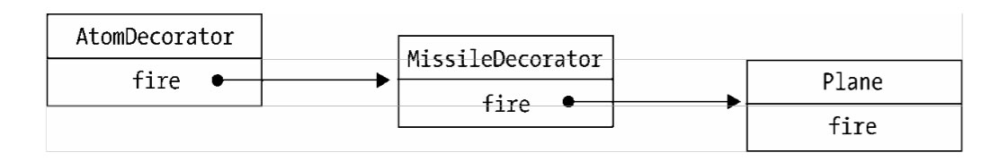

假设我们在编写一个飞机大战的游戏,随着经验值的增加,我们操作的飞机对象可以升级成 更厉害的飞机,一开始这些飞机只能发射普通的子弹,升到第二级时可以发射导弹,升到第三级 时可以发射原子弹。
导弹类和原子弹类的构造函数都接受参数 plane 对象,并且保存好这个参数,在它们的 fire方法中,除了执行自身的操作之外,还调用 plane 对象的 fire 方法。
这种给对象动态增加职责的方式,并没有真正地改动对象自身,而是将对象放入另一个对象 之中,这些对象以一条链的方式进行引用,形成一个聚合对象。这些对象都拥有相同的接口(fire 方法),当请求达到链中的某个对象时,这个对象会执行自身的操作,随后把请求转发给链中的 下一个对象。
因为装饰者对象和它所装饰的对象拥有一致的接口,所以它们对使用该对象的客户来说是透 明的,被装饰的对象也并不需要了解它曾经被装饰过,这种透明性使得我们可以递归地嵌套任意 多个装饰者对象,
JavaScript 语言动态改变对象相当容易,我们可以直接改写对象或者对象的某个方法,并不 需要使用“类”来实现装饰者模式,代码如下:
1、通过保存原引用的方式就可以改写某个 函数:
首先给出 Function.prototype.before 方法和 Function.prototype.after 方法:
Function.prototype.before 接受一个函数当作参数,这个函数即为新添加的函数,它装载了 新添加的功能代码。
接下来把当前的 this 保存起来,这个 this 指向原函数,然后返回一个“代理”函数,这个“代理”函数只是结构上像代理而已,并不承担代理的职责(比如控制对象的访问等)。它的工作 是把请求分别转发给新添加的函数和原函数,且负责保证它们的执行顺序,让新添加的函数在原函数之前执行(前置装饰),这样就实现了动态装饰的效果。
我们注意到,通过 Function.prototype.apply 来动态传入正确的 this,保证了函数在被装饰之后,this 不会被劫持。
Function.prototype.after 的原理跟 Function.prototype.before 一模一样,唯一不同的地方在 于让新添加的函数在原函数执行之后再执行。
下面来试试用 Function.prototype.before 的威力:
再回到 window.onload 的例子,看看用 Function.prototype.before 来增加新的 window.onload 事件是多么简单:
值得提到的是,上面的 AOP 实现是在 Function.prototype 上添加 before 和 after 方法,但许 多人不喜欢这种污染原型的方式,那么我们可以做一些变通,把原函数和新函数都作为参数传入 before 或者 after 方法:
分离业务代码和数据统计代码,无论在什么语言中,都是 AOP 的经典应用之一。在项目开发的结尾阶段难免要加上很多统计数据的代码,这些过程可能让我们被迫改动早已封装好的函数。
比如页面中有一个登录 button,点击这个 button 会弹出登录浮层,与此同时要进行数据上报, 来统计有多少用户点击了这个登录 button:
我们看到在 showLogin 函数里,既要负责打开登录浮层,又要负责数据上报,这是两个层面 的功能,在此处却被耦合在一个函数里。使用 AOP 分离之后,代码如下:
从这段代码的(1)处和(2)处可以看到,beforefn 和原函数__self 共用一组参数列表 arguments,当我们在 beforefn 的函数体内改变 arguments 的时候,原函数__self 接收的参数列 表自然也会变化。
下面的例子展示了如何通过 Function.prototype.before 方法给函数 func 的参数 param 动态地 添加属性 b:
-->在一个 Web 项目中,可能存在非常多的表单,如 注册、登录、修改用户信息等。在表单数据提交给后台之前,常常要做一些校验,比如登录的时 候需要验证用户名和密码是否为空,代码如下:
用户名: 密码:formSubmit 函数在此处承担了两个职责,除了提交 ajax 请求之外,还要验证用户输入的合法 性。这种代码一来会造成函数臃肿,职责混乱,二来谈不上任何可复用性。
本节的目的是分离校验输入和提交 ajax 请求的代码,我们把校验输入的逻辑放到 validata 函数中,并且约定当 validata 函数返回 false 的时候,表示校验未通过,代码如下:
现在的代码已经有了一些改进，我们把校验的逻辑都放到了validata 函数中，但 formSubmit 函数的内部还要计算validata函数的返回值，因为返回值的结果表明了是否通过校验
进一步优化这段代码，使validata和formSubmit完全分离开来。首先要改写Function.prototype.before,如果 beforefn 的执行结果返回 false,表示不再执行后面的原函数,代码如下:
在这段代码中,校验输入和提交表单的代码完全分离开来,它们不再有任何耦合关系, formSubmit = formSubmit.before( validata )这句代码,如同把校验规则动态接在 formSubmit 函数 之前,validata 成为一个即插即用的函数,它甚至可以被写成配置文件的形式,这有利于我们分 开维护这两个函数。再利用策略模式稍加改造,我们就可以把这些校验规则都写成插件的形式, 用在不同的项目当中。
值得注意的是,因为函数通过 Function.prototype.before 或者 Function.prototype.after 被装 饰之后,返回的实际上是一个新的函数,如果在原函数上保存了一些属性,那么这些属性会丢失。 代码如下:
装饰者模式和第 6 章代理模式的结构看起来非常相像,这两种模式都描述了怎样为对象提供 一定程度上的间接引用,它们的实现部分都保留了对另外一个对象的引用,并且向那个对象发送 请求。
代理模式和装饰者模式最重要的区别在于它们的意图和设计目的。代理模式的目的是,当直 接访问本体不方便或者不符合需要时,为这个本体提供一个替代者。本体定义了关键功能,而代 理提供或拒绝对它的访问,或者在访问本体之前做一些额外的事情。装饰者模式的作用就是为对 象动态加入行为。换句话说,代理模式强调一种关系(Proxy 与它的实体之间的关系),这种关系 可以静态的表达,也就是说,这种关系在一开始就可以被确定。而装饰者模式用于一开始不能确 定对象的全部功能时。代理模式通常只有一层代理本体的引用,而装饰者模式经常会形成一条 长长的装饰链。
在虚拟代理实现图片预加载的例子中,本体负责设置 img 节点的 src,代理则提供了预加载 的功能,这看起来也是“加入行为”的一种方式,但这种加入行为的方式和装饰者模式的偏重点 是不一样的。装饰者模式是实实在在的为对象增加新的职责和行为,而代理做的事情还是跟本体 一样,最终都是设置 src。但代理可以加入一些“聪明”的功能,比如在图片真正加载好之前,先使用一张占位的 loading 图片反馈给客户。
这种模式在实际开发中非常 有用,它在框架开发中也十分有用。作为框架作者,我们希望框架里的函 数提供的是一些稳定而方便移植的功能,那些个性化的功能可以在框架之外动态装饰上去,这可 以避免为了让框架拥有更多的功能,而去使用一些 if、else 语句预测用户的实际需要。